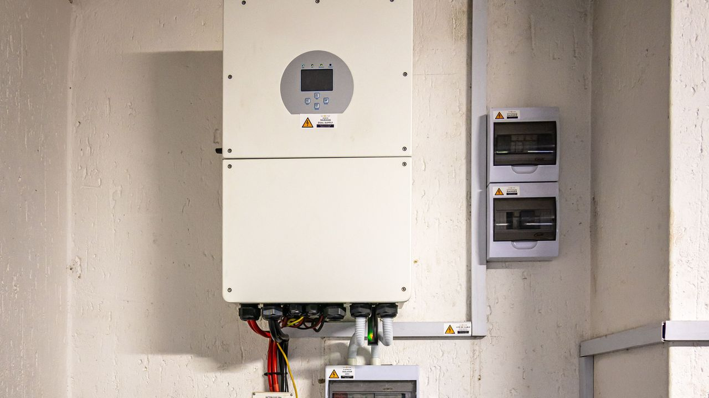

If your solar system has batteries, it needs a charge controller — the device that sits between the panels and the battery bank and manages how they're charged. There are two types, PWM and MPPT, and the choice between them affects both how much energy you capture and how much you spend. They do the same core job very differently.
What a charge controller does
A charge controller's main job is to protect the battery: stop it overcharging when the sun is strong, and control the flow of current so it charges safely and lasts. Along the way, it also decides how much of the panel's available energy actually makes it into the battery — and that's where the two types part ways.
How a PWM controller works
PWM (pulse-width modulation) makes an almost direct electrical connection between the panel and the battery. Because they're effectively tied together, the panel is dragged down to the battery's voltage. That's fine when the two are close — but a panel might produce its peak power at, say, 18 V while a 12 V battery only accepts around 13–14 V. The voltage above the battery's level is simply lost. PWM is cheap, simple, and reliable, but it leaves energy on the table whenever the panel voltage sits well above the battery.
How an MPPT controller works
MPPT (maximum power point tracking) is a smart DC-to-DC converter. Instead of dragging the panel down to battery voltage, it lets the panel run at its most productive voltage and then converts the surplus voltage into extra current. Power in equals power out, so trading "too much voltage" for "more amps" means more energy actually reaches the battery — typically 15 to 30 percent more than PWM, and the gap is widest when the array voltage is much higher than the battery or when it's cold (cold panels produce higher voltage).
The real difference in one line
PWM throws away the panel's extra voltage; MPPT turns that extra voltage into extra charging current. That single difference is why MPPT recovers more energy and can handle much higher array voltages — which also lets you wire panels in series for longer, thinner cable runs.
When PWM is perfectly fine
PWM isn't obsolete. On a small, simple, budget system where the panel's nominal voltage already matches the battery — a single 12 V panel on a 12 V battery, a small RV or shed setup — there's little extra voltage for MPPT to recover. In that case PWM captures nearly as much, costs less, and keeps things simple. Spending on MPPT there is money you won't get back.
When you need MPPT
Reach for MPPT when the array voltage is much higher than the battery (panels in series), on systems above a few hundred watts, in cold climates, or anywhere you want to squeeze out every kilowatt-hour. It's also the safer choice for battery health on off-grid systems, where the controller has to regulate charge and discharge carefully. To size one for your array, use the charge controller calculator.
From the field
On off-grid systems I always fit an MPPT controller. The array voltage runs much higher than the battery voltage, so the MPPT steps it down properly and regulates both the charge and the discharge — which protects the batteries from the damage a mismatched voltage would cause. On off-grid it isn't just about harvesting extra energy; it's what keeps the battery bank healthy over the years.
Where to go next
Once you've chosen a type, size it with the charge controller calculator, work out your array's voltage and current with the series & parallel calculator, and if you're building a complete off-grid setup, the off-grid system wizard ties the panels, battery, inverter, and controller together. For the bigger picture on system types, see grid-tied vs off-grid vs hybrid.
Frequently asked questions
What is the difference between MPPT and PWM charge controllers?
PWM connects the panel almost directly to the battery, pulling panel voltage down to battery voltage and wasting anything above it. MPPT is a DC-DC converter that turns the panel's extra voltage into extra current — usually 15–30% more energy, especially at high array voltage or in the cold.
Is MPPT always better than PWM?
MPPT harvests more and handles higher voltages, so it wins for most systems above a few hundred watts, series arrays, and cold climates. But on a small 12 V system where panel and battery voltage already match, PWM captures nearly as much for less money.
When is a PWM charge controller the right choice?
Small, simple, budget systems where the panel's nominal voltage matches the battery — like a single 12 V panel on a 12 V battery. There's little extra energy for MPPT to recover, so PWM's lower cost wins.